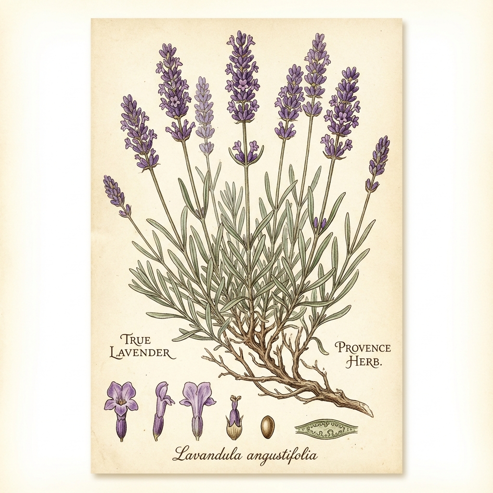

💜'">
1. Echter Lavendel
Lavandula angustifolia
🗣️ Lokale Namen: Lavande vraie, Lavande fine
🔍 Erkennung
- Violett-blaue Blütenähren
- Silbrig-graue, schmale Blätter
- Intensiver, charakteristischer Duft
- 30-60 cm hoch
📍 Fundorte in Frankreich
Provence (weltberühmt!), Alpen, trockene Kalkböden. Wild ab 800m Höhe.
📅 Sammelzeit
Blüten: Juli - August (kurz vor voller Blüte)
💊 Heilwirkung
- Beruhigend - Das beste natürliche Beruhigungsmittel
- Schlaffördernd - Bei Einschlafproblemen
- Antiseptisch - Wundheilung, Insektenstiche
- Krampflösend - Bei Kopf- und Magenschmerzen
📋 Anwendung
Tee: 1-2 TL Blüten, 10 Min. ziehen - abends.
Öl: Auf Schläfen bei Kopfschmerzen.
Duftkissen: Im Schlafzimmer.